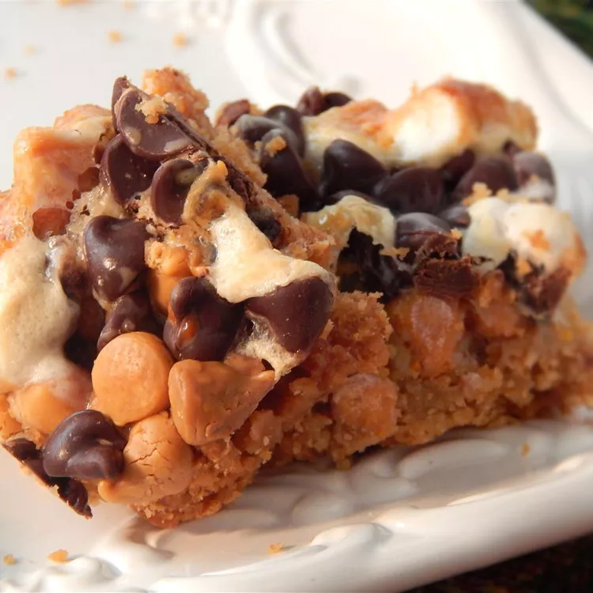

Home
S'mores Bars

Descripton
This is a great, quick recipe for a very sweet treat - no measuring involved!
This is so easy to play with. You could make your crust out of chocolate grahams,
or add any extra little sweetness you would like.
Ingredients
- cooking spray
- ¾ cup butter, melted
- 2 individual packages graham crackers, crushed
- ½ (12 ounce) bag chocolate chips, or more to taste
- ½ (12 ounce) package butterscotch chips
- ½ (10.5 ounce) package miniature marshmallows
- ½ (14 ounce) can sweetened condensed milk, or more to taste
Steps
-
Preheat oven to 350 degrees F (175 degrees C).
Grease an 8x8-inch square pan with cooking spray.
-
Mix melted butter and graham cracker crumbs together;
press into an even layer at the bottom of the pan.
Top with chocolate chips, butterscotch chips, and marshmallows.
Drizzle sweetened condensed milk on top.
-
Bake in the preheated oven until bubbly, 17 to 20 minutes.
-
Let cool, about 30 minutes. To make it easier to cut into bars,
cover with plastic wrap and chill, about 30 minutes.